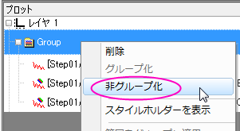
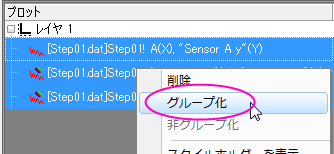

「作図のセットアップ」ダイアログボックスの一番下のパネルには、グラフ内のデータプロットが表示されます。データプロットの追加、削除、置換えやプロット表示範囲、データプロットのグループ化/非グループ化、データプロットの順序などを制御するために使用します。
目次 |
中央のパネルでデータ列を選択した後、下側パネルでレイヤを選択し、追加ボタンをクリックして、レイヤにデータプロットを追加します。
既存のプロットを置き換えるには
|
Note:選択したプロットが別のプロットとグループ化されている場合、グラフタイプを変更すると、このグループ内のすべてのプロットのグラフタイプが変わりますが、プロット属性は変わりません。 |
作図のセットアップダイアログボックスの下側パネルで、データプロットの表示範囲を変更することができます。
同じコンテキストメニューを使って、現在のレイヤまたはページ内のすべてのデータプロットに範囲を適用することもできます。
「作図のセットアップ」ダイアログボックスを使って、データプロットのグループ化と非グループ化を切り替えることができます。
|  |  |
| 非グループ化 | グループ化 |
各データプロットをドラッグして、順番を入れ替えることができます。
プレビューボタンで、プレビューダイアログを開き、グラフ中の現在のプロットと、使用しているテンプレートを表示します。
テンプレートライブラリに保存されている、ユーザ定義のグラフテンプレートを使って作図している場合のみ、 プレビューダイアログに、テンプレート画像とアクティブレイヤのみ表示のチェックボックスが表示されます。
アクティブレイヤのみ表示のチェックボックスにチェックが付いている場合、 プレビューパネルの左上にあるレイヤアイコンをクリックして、表示レイヤを変更することができます。表示レイヤを変更すると、テンプレートパネルも更新されます。